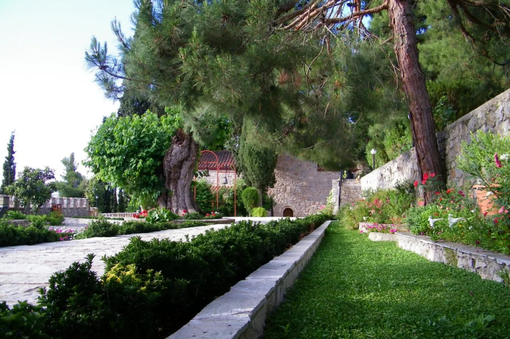

Η καθημερινή προσευχή & Η κοινή λατρευτική ζωή
Το κέντρο της μοναστικής ημέρας είναι η Θεία Λατρεία. Από τον Όρθρο και τη Θεία Λειτουργία μέχρι τον Εσπερινό και το Απόδειπνο, ο χρόνος καθαγιάζεται. Η ατομική προσευχή στο κελλί, η μελέτη και η "νοερά προσευχή" συμπληρώνουν τις κοινές ακολουθίες, δημιουργώντας ένα συνεχή διάλογο της ψυχής με τον Δημιουργό.

Ο δρόμος του μοναχού είναι μια εκούσια έξοδος από τον κόσμο για την εύρεση του Κόσμου. Μέσα στην ησυχία του βουνού και την ταπείνωση της υπακοής, η καρδιά καθαίρεται από τα πάθη και καθίσταται δοχείο της Θείας Χάριτος.
Η μελέτη & Η βυζαντινή μουσική
Η πνευματική τροφή αντλείται από τα έργα των Αγίων Πατέρων και των μεγάλων ασκητών. Η μελέτη δεν είναι απλή γνώση, αλλά βίωμα. Παράλληλα, η Βυζαντινή Μουσική, ως τέχνη αγγελική, διακονεί τη λατρεία, εκφράζοντας τον εσωτερικό πόθο της ψυχής για τη θέωση.



Η διακονία και η εργασία
Η εργασία στον μοναχισμό ονομάζεται «διακόνημα». Κάθε έργο, από την καλλιέργεια της γης μέχρι τη μαγειρική και την αγιογραφία, επιτελείται ως προσφορά στον Θεό. Η εργασία δεν κουράζει την ψυχή, αλλά την ταπεινώνει και την ενώνει με τη δημιουργία.
Ο καθημερινός ρυθμός & Η φιλοξενία
Η Φιλοξενία
Η Μονή αποτελεί λιμάνι για κάθε προσκυνητή. Η φιλοξενία δεν είναι τυπική παροχή, αλλά πνευματική αγκαλιά. Κάθε επισκέπτης αντιμετωπίζεται ως πρόσωπο του Χριστού, προσφέροντας ανάπαυση και πνευματική οικοδομή.
Ο Ρυθμός της Αδελφότητος
Η ζωή στη Μονή ακολουθεί ένα σταθερό, ήσυχο ρυθμό που εναλλάσσεται μεταξύ της κοινής τράπεζας, της εργασίας και της σιωπής. Αυτή η σταθερότητα προσφέρει την ασφάλεια που χρειάζεται η ψυχή για να ανθίσει πνευματικά.